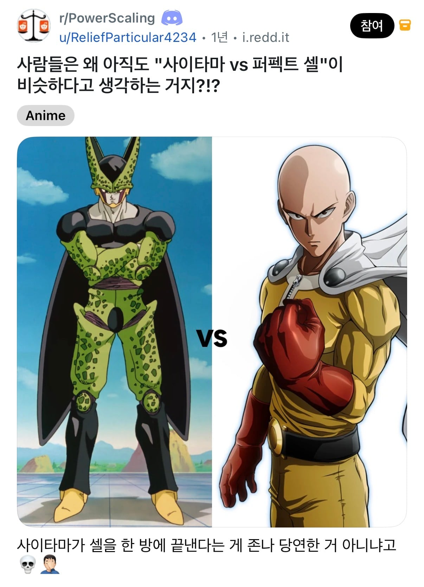
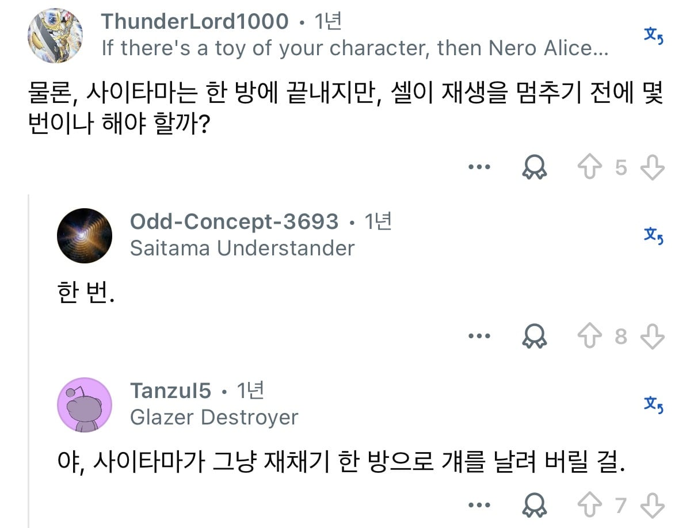
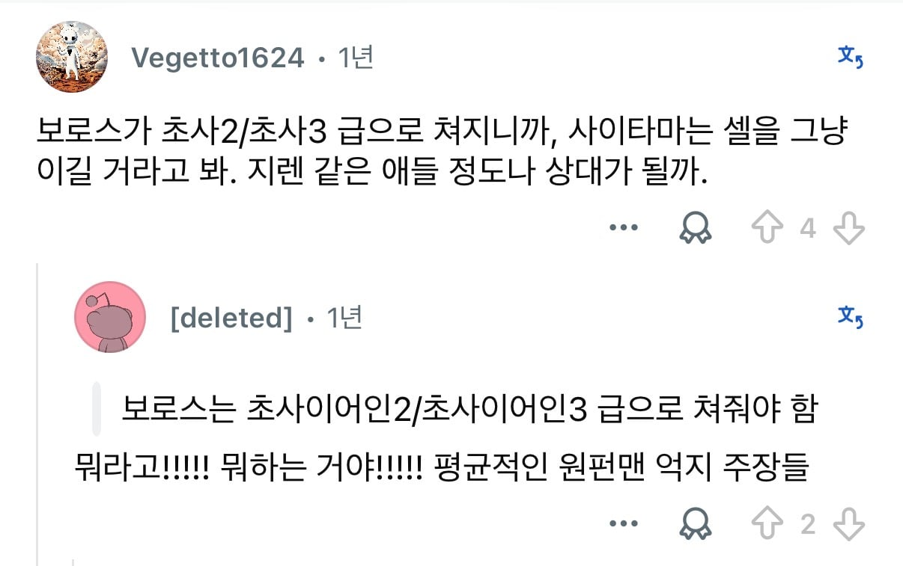
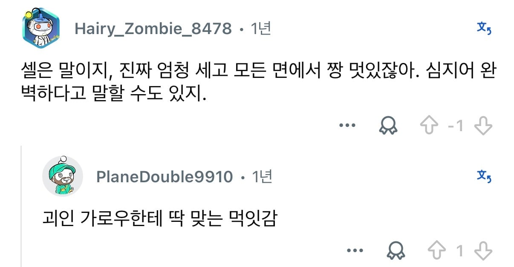

완전체 셀 VS 사이타마




완전체 셀 VS 사이타마
아 먹칠하기 귀찮아!
사이타마 설정이 상대가 강할수록 본인도 강해지는 설정일거임 리미트 계속 올라가는거
사이타마의 한계를 묘사한적이 없지만
거기 히어로나 빌런들 묘사가
전투력 두세자리 시절 때 묘사아닌가?
S급 3위 실버팽도 무천도사급
2위 타츠마키도 차오즈 약간 상위급일것같은데
만약 무라타가 드레곤볼 그렸으면
야지로베가 베지터 꼬리 자를 때 묘사도
아토믹 사무라이 보다 간지나게 그렷을듯.
그냥 시대에 따른 만화 연출법의 차이지 셀게임 기준의 드레곤볼 케릭터가 훨씬 셀것같다.
무천도사는 천하제일무술대회에서 카메하메하로 달부쉈음..
원펀맨 운석낙하편때 실버팽 아무것도못함
그럼 타오파이파이급
셀은 모르겠고 드래곤볼은 설정으로만 보면 행성 부수는건 일도 아니지않나 ㅋㅋ
무천도사만 해도 달은 부수니 ㅋㅋ
캐릭터 설정상 사이타마가 이겨야 맞지
사이타마는 설정상 무적이니 사이타마가 이김
드볼 세계관으로 치면 전왕의 존재 삭제 핑거 스냅 정도만 상대가 가능할듯
사이타마급으로 성장한 가로우한테 피토하면서 그 정도 아니게 됨
?? 피토한 전개가 있었나?
피인지 침인지 뭘 뿜었음
근데 설정 따지고 보면 크리링은 지구인 최강이잖아ㅋㅋ
미치셨나 사이타마를 크리링도 아니고 셀에 비벼?
크리링은 딱밤 컷
사이타마
점프해서 달에서 지구 오차없이 이동가능
드래곤볼
몰루. 가능한 애들은 있을꺼 같은데 다들 날아다녀서..
신이 담긴 육체..
무천도사급만 되도 에네르기파로 달 부셔 ㅋㅋㅋㅋ
그런데 손가락 때로 무천도사 죽일수있는 셀?
설정상 완전체 셀이 태양계도 부숴
난 같은 작품 내 VS 떡밥(예: 지라이야 vs 이타치)은 상관없는데 타작품 vs떡밥은 무의미하다고 봄
Z전사들쪽이 더 강한건 맞는데(완전체셀은 태양계를 파괴한댔나?) 사이타마는 상대가 강할수록 싸우면서 금방금방 따라잡더라고
가로우와 싸울때는 목성에서 난리치더만
셀은 간지나니깐
사이타마 자체가 크리링이 모티브인 걸로 아는데
언제부터 드래곤 볼이 이렇게 얕잡아 보이기 시작한거냐..ㅋㅋㅋㅋ
드래곤 볼 못 본 세대니까 그렇지..
퍼펙트 셀 에네르기파는 태양계 전체를 날려버린다고 공식언급 된 적 있음..
그 이후 초샤이어인은 은하계를 날리니 마니 하는데..
영포티들 신났네 ㅋㅋ
크리링이 인간 최강이라고는 알고 있었는데 행성 뿌셔가 가능했어???
드래곤볼은 잘 모르는데 프리저가 행성 갭투자자 아닌가? 얘부터 행성 박살 냈던거 같긴한데
행뿌는 무천도사도 가능했음
야무치가 손가락 딸깍하면 깨지는게 지구임...
야무치가?? 야무치 죽는 애 아님?
베지터가 지구 첨왔을때 지구 부술 수 있었지 않나? 보로스도 지구와 함께 날려보낸다는 묘사 있었으니 보로스는 지구 첨 왔을 때 베지터랑 비슷할 듯
만화에서 보로스는 지표면을 날려버린다고 했음 베지터보다 한참 아래
그거 뭐 나중에 설정집에서 수정돼서 보로스도 지뿌 한대
설정집에 그런 표현은 따로 없고 지구 부수는건 애니메이션판
그 애니메이션판이 리메이크판 기준이라서 사실상 만화에서도 지뿌임. 리메이크판도 원작자 공인인데 인정 안 한다고 치면 걍 셀 압승으로 끝나고
리메이크판 만화에 '이 별의 지표면을 쓸어주마' 라고 나와있음
그리고 그거 인정해도 항성계 부수는 셀을 어떻게 이김;
https://gall.dcinside.com/mgallery/board/view/?id=onepunchman&no=293909
설정집에서 수정했다고 말했고
https://arc지우셈a.live/b/versusbattle/183722199
리메이크판 되면 사이타마도 주먹으로 은하계 부수는 연출 나와서 애매함
지구를 지우는 절망의 포효 저거 원문 '地球を削る絶望の咆哮!!'고 削る(케즈루)는 깎아내다 임
대사대로 지표면을 쓸어버리면 지구를 깎아낸거고 지구는 파멸함 수정된게 없음
니가 가져온 아카라이브 링크에서도 얘기하네 가로우랑 진심펀치 난타전하는데 목성 하나도 못부순다고
ㅇㅇ 근데 결국엔 목성 부수고 우주에 구멍냄. 그에비해 셀은? 자폭으로 태양계 부순다고 말했지만 실제론 지구 하나도 못 부숨.
물론 이건 지구 다 때려부수는 식으로 재미를 주는 게 아닌 만화인 드래곤볼이랑 요근래 나와서 다 때려부수는 게 재미인 만화라서 생기는 차이고, 이딴 식으로 비교하는 거 결국 의미 없다고 보긴 하지만 묘사 연출로만 봤을 땐 셀이 결국 짐
ㅇㅇ; 목성은 부수지도 못했고 우주에 구멍은 진심펀치^2 에너지를 블래스트랑 친구들이 한쪽으로 몰아준 결과임
실제 묘사 연출상으로는 사이타마랑 사이타마급 스펙인 가로우가 진심펀치로 난타전 벌여도 목성 안터짐
묘사가 들쭉날쭉이라 이런건 설정 싸움으로 가야하는데 난 오피셜로 태양계 날린다 셀 편임
사이타마가 무적처럼 보이는건 고점을 내보인 적이 없었기 때문임.
한방에 끝내는게
만화 이름에 맞게 서사가 그리 짜이는건지
무조건 한방이 나는 개념기나 법칙 같은건지
그냥 무지하게 쎄서 한방이 나는건지 알 수 없었음.
이제 밝혀진걸로는 그냥 쎄서 한방이었던거고
한방 아닌 적한테는 결과적으로 한방이 되도록 작가가 스토리를 짜 맞추는거.
내구력도
아예 노데미지가 설정인지
단순히 내구력이 높아서 노데미지인지 알 수가 없었는데
상대 공격력이 높으면 뚫을 수 있는게 묘사됨.
그래서 단순히 스펙이 높아서 무적의 한방처럼 보였던거고 거기다 실시간으로 계속 강해지니 얼마나 강한지 상한을 관측하기 힘들었던거임.
사이타마가 보여준 최고점은 재채기로 목성 대기의 가스를 날려버리고 내핵을 드러낸거임.
그마저도 시간되돌리고 없던 일이 되버리면서 여전히 이때의 강함인지는 알 수가 없음.
여태 묘사된걸로만 봐서는 완전체 셀은 몰라도
태양계 날려버리는 초완전체 셀은 무리일듯.
근데 실시간으로 싸우는 중에 강해지는 설정이니까 빠르게 제압하지 않으면 추월당할 수는 있겠지
이미 끝난 작품은 아직 연재중인 작품을 못 이기고
이미 돌아가신 작가는 살아있는 작가를 못 이김
내용이나 설정을 바꿀 수 있으니까
전투력 139인 무천도사가 달을 날렸는데
후반부 인물들은 항성급 전투력 아닌가?
원펀맨 앞대가리만 좀 봐서 그런데
원펀맨이라는 이름 자체가 한방을 먹여야 한방에 끝내는거 아님?
셀한테 한방을 못먹이지 않나
사이타마가 행성 부술수 있는거 아니면 셀 압승이지
리메이크 최신화에선 방구로 목성 부숨
야랄났구만...
야무치선에서 다 정리가능하지
애초에 재배맨 몇개풀어두면 자동사냥됨
각기 다른 만화 속에 나오는 등장인물들이라 서로 싸워볼 수도 없으니 결국 설정싸움으로 가야 되는데, 얘네들은 설정싸움해도 결판이 안 남.
원펀맨 설정 놓고 보면 사이타마는 사실상 무적이라서 셀을 이겨야 정상이고
드래곤볼 설정 놓고 보면 지구인 중 최강은 크리링이라 사이타마는 크리링한테도 져야 정상이고 그렇게 따지면 당연히 셀한테도 지는게 됨.
초사이어인 디자인은 기깔나다 정말